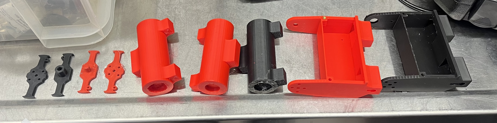

Projects

My Porfolio
Personal Project
January 2025 - Present
I wanted to make this website to showcase my projects and give employers a better picture of who I am. Additionally, it was a good opportunity to learn about web design and brush up on css, html, and javascript.
I initially tried to use the react library, but I decided against it because I thought it was adding unnecessary complexity to the website since I thought I wasn’t going to be re-using too many components. I originally had a different navbar design, but I thought it was too plain, so I scrapped it.
The first page I coded was the Home page. I didn't know anything about flexbox or CSS in general, so I went about aligning it in a really strange way. It worked out, but I would have liked to be more adaptive to different viewports. If I were to do it again, I would have used flexbox. I used a library that loops through strings to give them the appearance of being typed out for the card page, and had an onclick event for the resume download button. It was much easier to program the rest of the website after getting acquainted with the CSS box model and flexbox.
1 Pound Combat Robot
Northeastern Combat Robotics Club
September 2024 - Present
I decided to start this project to expand my CAD skills and get a chance to work with electronics and design. The early CAD for this project is all broken since I made assemblies without using relational dimensioning.
Lots of people at the combat robotics club were building horizontal spinner robots, so I decided to build a vertical spinner.
The first thing I did was make some drawings of ideas I had for the robot. I made a solidworks assembly with all of the electronics and motors (which i either measured or found CAD of) to get an idea of the size of the robot. After that, I made my first prototype, which I don't have the CAD for because I changed the files instead of making copies and the assembly broke since I didn't use relational dimensioning.
I was originally going to have 5 parts, the housing for the drive motors, bottom plate, top plate, a separate mount for the weapon motor, and the weapon. Here are pictures of the original weapon mount and weapon.
This design had a couple of problems. First, it was over complicated and assembly was going to be a nightmare, it was going to be weak at the connections between parts, and it was asymmetrical (and ugly). So I set out to redesign the robot with simplicity, ease of assembly, and symmetry in mind.
To do this, I combined the bottom plate, drive motor housing, and weapon motor mount into a new and much more complete bottom plate. I also changed the weapon to be more symmetric Here is the design of my second prototype. I made the spots for the screws bigger for heat-set inserts and used a bearing to mount the weapon.
I originally asked someone in the club what bearings they had and they sent me a McMaster file for the bearing, but when I actually 3D printed everything they told me they didn’t have any of that bearing (TRUST NO ONE, MEASURE EVERYTHING YOURSELF). The competition for the semester was soon so I tried to use a dremel to cut deeper into the bearing hole, but it just caused the PLA to melt and the shape of the hole to warp. I had to change the CAD to accommodate the new bearing.
In order to make the weapon the biggest I could possibly make it, I did some weight calculations. LargeWeapon is the one in this design, which I originally wanted to make about 250 grams, but it wasn't possible because of the weight of everything else.
I'm still working on this project. The next step is to 3D print all the parts and assemble it. Last semester, I had soldered all the electronics, including a two drive motors, a brushless weapon motor, a weapon and drive ESC, a reciever, and a switch. I left the electronics in the 1 pound robot cabinet in the club room and it got lost over winter break, so I need re-do all the soldering.
I have been making small tweaks to different parts the robot and 3d printing them to test out how they fit together

Smart Step
Forge Product Development Lab
September - December 2024
I worked on this project with 6 other engineers as a team at Northeastern’s Forge Product Development lab.
We began by coming up with problems relating to forge’s theme, which was safety for the fall 2024 semester. As a group, we chose 3 key problems and came up with different products that could solve the problems. We then made sketches and voted on the best idea, which was a height changing cane.
Our goals for the cane were to include a GPS system, an app to track step count, pressure sensors to automate lengthening and shortening, and the height changing mechanism. I chose to work on the height changing mechanism.
First, I researched how to turn rotational motion from a motor into translational motion, and decided to use a telescopic actuator mechanism. Here is some early CAD I made for the body. The CAD includes a coupler, a threaded rod, and two gliders that move along the threaded rod.
I then made a second prototype of the lower body tube connection to the upper body tube. This design didn’t have a way for the threads on the lower body tube to interface with the upper body tube, and nothing stopping it from moving rotationally instead of translationally. At this point, I needed to think of a track system to constrain the movement of the lower body tube to translation.
My solution was creating a cutout in the upper body tube with an aluminum rod in the middle, which acts as a track system for the lower body tube to move along. To interface with the threaded rods, the gliders on the lower body tube have a nut inside of them that has the same threading.
The outer aluminum rod slots into a piece at the bottom of the upper body tube. And a 3D printed piece constrains the rotational motion by sliding on the aluminum rod.
Here is a picture of the final assembly. As can be seen, the body section is integrated with the base and the electronics case.
The space between the inner body tube and outer body tube was about 0.1 inch, so I used a small drill bit and then a larger drill bit on the drill press to make holes for screws so that they could be flush with the exterior of the inner body tube. We drew a funny face on the inner body tube and I designed a piece to hold down the motor since all the force would go straight through the threaded rod and into it.
I also helped with the electronics and testing the motor. Our lead insisted on using motors that were already available at the makerspace we were working in, so we tested out a couple of motors. The fastest motor we found took about 6 seconds to fully extend or contract.
In the end, something went wrong with the electronics so it wasnt working on time for the showcase.
Subscale Rocket
Nasa Student Launch Initiative
September - November 2024
I worked on this project in collaboration with students at the Northeastern University Launch Initiative club.
We each made openrocket designs for a 4.85 foot tall rocket. We changed different settings in the openrocket to maximise stability, apogee, flight time, and minimize ground hit velocity. Here are pictures of my openrocket design, the individual parts, and the results from the simulation.
After finalizing our OpenRocket designs, I began to work on the fin can for the rocket. I asked my subteam lead for specifications about things I needed to know, like the diameter of the inner body tube that holds the motor, and the diameter of the outer body tube, as well as the dimensions of the fins. The goal was to minimize weight and maximize strength, and the design required the accommodation of 3 fin mounts and space for 3 metal rods to pass through it.
Here was my first design. The fins mount to each fin can with two screws, 6 screws mount the fin can to the outer body tube, and 12 screws mount the fin can to the inner body tube. Other people in the club’s designs had the holes for the metal rods aligned with places where the fins mount. In my design, I chose to move the holes away from the fin mounts to better distribute the force since my subteam lead said that the majority of the force was coming from the rods and the fins.
I then re-designed it because the connection to the outer body tube was weak and my subteam lead gave me the wrong dimension for inner and outer body tubes of the rocket.
Here is my second design. I fixed the dimensions of the inner and outer body tube (which I measured myself instead of taking people’s word for it), and I changed the connection to the outer body tube to be more solid.
When I showed this design to my subteam leader, he said that he wanted me to extend the holes for the connection with the outer body tube so that heat-set inserts could be placed inside. Originally, the only way I could think of doing this was by moving the holes for the metal rods to be aligned with the fin mount.
In my final design, I took a page from the first design with the configuration of the heat set insert holes. I also ditched the beveled holes because the fin was going to be mounted using a nut and bolt, and I didn’t know the dimensions of the bolt.
Material Testing Mount
DeLTA Lab
October - November 2024
I worked on this project under the supervision of the professor managing the lab. My task was to design a Vacuum-compatible magnetic sample holder with rotational and height adjustment.
The first thing I did was meet with the assistant lab professor to discuss the specifications of the project. It needed to be less than 30mm wide, and needed to have open space on two of the sides to absorb light from a laser and reflect it perpendicularly.
We found the sizes of the magnets needed to produce the required magnetic field for the experiment and I created an initial prototype. This prototype had a k-shape that would have the material sample sitting out in the open, allowing light from the laser to enter from one side and exit perpendicularly.

After making this design and talking to the professor, he let me know that there had been some changes to the experimental setup because of the lab the experiment was being done at. In my first design, I had given space on the sides for the laser to enter and exit, however, the new setup required the laser to enter from the side and exit upwards.

After making this design and talking to the professor, he let me know that there had been some changes to the experimental setup because of the lab the experiment was being done at. In my first design, I had given space on the sides for the laser to enter and exit, however, the new setup required the laser to enter from the side and exit upwards.
The lab professor and I got the piece machined at Xometry, which is a manufacturing service. Here is what the piece looks like in real life: